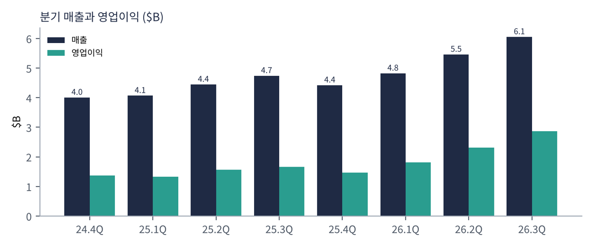
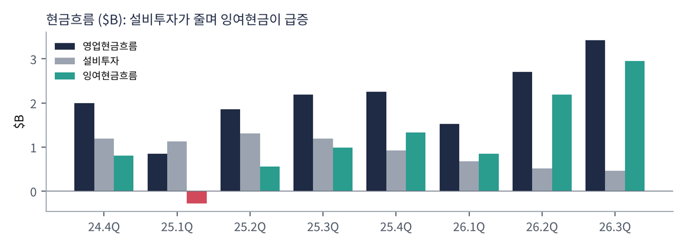
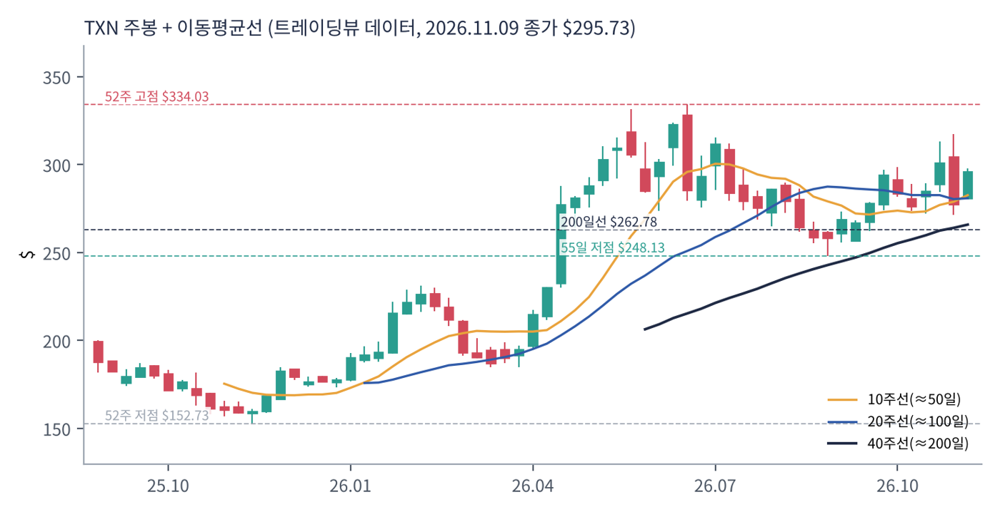
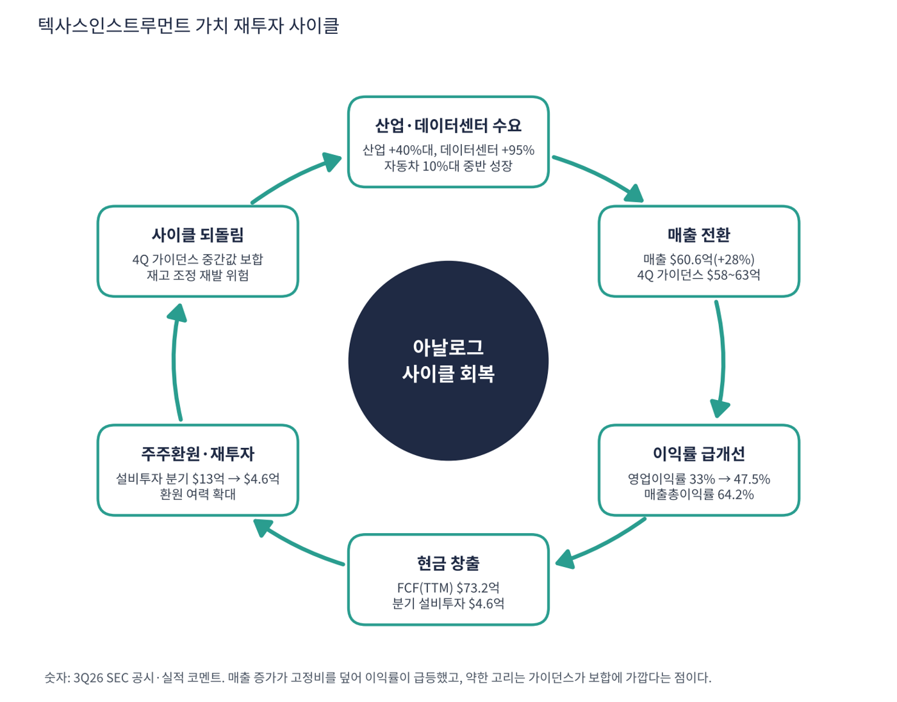

텍사스인스트루먼트(TI)는 전자제품 안에서 전력·신호를 다루는 아날로그 반도체와 임베디드 프로세서를 파는 세계 최대급 반도체 회사다. 8만 종 안팎의 제품을 산업·자동차·개인용 전자·통신·데이터센터에 공급한다. 2023~25년에 300mm 웨이퍼 공장을 짓느라 설비투자가 매출의 30%까지 올랐고, 2026년 들어 공장 투자가 줄며 매출 회복과 잉여현금 급증이 동시에 나오는 구간이다.
| 항목 | 내용 |
|---|---|
| 종목 | Texas Instruments Incorporated (TXN) · NASDAQ · 아날로그·임베디드 반도체 · 본사 텍사스주 댈러스 |
| 시가총액 | 약 $2,702억 · TTM PER 38.4배 · P/S 12.3배(트레이딩뷰) · 11/9 종가 $295.73(+6.6%) |
| 최근 분기(2026.3Q) | 매출 $60.55억(+28%), 영업이익 $28.74억(47.5%), 순이익 $24.25억, EPS $2.62, 영업현금 $34.19억 |
| 다음 분기 가이던스 | 4Q 매출 $58~63억, EPS $2.45~2.79 (중간값은 3Q와 비슷) |
| 3Q 사업별 코멘트 | 산업 +40%대 이상, 데이터센터 +95%, 자동차 10%대 중반, 아날로그 +32%, 임베디드 +21% |
| 다음 실적 | 4Q26 실적: 2027년 1월 하순 예정(확인 필요) |
| 직책 | 인물 | 역할·특징 |
|---|---|---|
| 사장 겸 CEO | 하비브 일란 | 2023년 취임. 아날로그·임베디드 사업 출신으로 300mm 공장 확대와 '잉여현금 주당 가치' 중심 자본배분을 이어가는 인물 |
| CFO | 라파엘 리자르디 | 설비투자 한도와 주주환원 계획을 분기마다 설명하는 재무 책임자 |
경영 스타일: '공장은 짓고 나면 오래 돈을 번다'. 설비투자가 분기 $13.2억(24.4Q)에서 $4.6억(26.3Q)으로 줄었고 같은 기간 영업현금은 $20억에서 $34억으로 늘었다. 투자 → 가동률 상승 → 현금 회수의 사이클을 길게 보고 자본을 배분하는 보수적인 장기형 경영이다. 가이던스도 구간으로 보수적으로 제시한다.
전력 관리·신호 변환·센서 칩을 자체 300mm 웨이퍼 공장에서 만들어 원가를 낮춘다. 아날로그 칩은 한 번 설계에 들어가면 10년 이상 쓰여 고객 교체가 어렵다.
산업 자동화·전기차·데이터센터 전력 공급 등 전기를 쓰는 곳이 늘수록 아날로그 칩 수요가 늘어난다. 회사는 이를 장기 성장의 근거로 삼는다.
| 분기 | 매출 | 영업이익 | 영업이익률 | 순이익 | EPS | 영업현금 | 매출총이익률 | 특이 사항 |
|---|---|---|---|---|---|---|---|---|
| 24.4Q | $40.1억 | $13.8억 | 34.4% | $12.1억 | 1.31* | $20.0억 | 57.7% | |
| 25.1Q | $40.7억 | $13.2억 | 32.5% | $11.8억 | 1.28 | $8.5억 | 56.8% | |
| 25.2Q | $44.5억 | $15.6억 | 35.1% | $12.9억 | 1.41 | $18.6억 | 57.9% | |
| 25.3Q | $47.4억 | $16.6억 | 35.1% | $13.6억 | 1.48 | $21.9억 | 57.4% | |
| 25.4Q | $44.2억 | $14.7억 | 33.3% | $11.6억 | 1.28* | $22.5억 | 55.9% | |
| 26.1Q | $48.2억 | $18.1억 | 37.5% | $15.4억 | 1.68 | $15.2억 | 58.0% | |
| 26.2Q | $54.6억 | $23.1억 | 42.3% | $19.8억 | 2.14 | $27.0억 | 61.4% | |
| 26.3Q | $60.5억 | $28.7억 | 47.5% | $24.2억 | 2.62 | $34.2억 | 64.2% | EPS $2.62, 가이던스 상회 |
EPS는 희석 주당순이익(GAAP, SEC 제출 자료 기준)이다. *는 4분기를 '연간 EPS − 1~3분기 합'으로 계산한 근사치라 실제 발표값과 다를 수 있다.


흐름 요약: 매출이 25.1Q $40.7억을 바닥으로 5분기 연속 늘어 $60.6억이 됐고, 3분기 증가율은 전년 대비 +28%, 직전 분기 대비 +10.8%다. 영업이익은 $13.2억에서 $28.7억으로 2.2배가 됐다. 영업이익률 32.5% → 47.5%의 대부분은 매출총이익률(56.8% → 64.2%)이 올라서다. 공장 가동률이 올라 고정비가 분산된 효과가 보인다. 영업현금은 분기 변동이 있지만(25.1Q $8.5억) 설비투자가 줄어 최근 4분기 FCF는 $73.2억(매출의 35%)으로 같은 기간 순이익 $71.1억을 웃돈다. 다만 4분기 가이던스 중간값(매출 $60.5억)은 3분기와 거의 같아 증가율이 둔화될 수 있다.
| 부문 | 돈을 버는 방식 | 26.3Q 성장 | 특징 |
|---|---|---|---|
| 아날로그 | 전력 관리·신호 체인 칩. 전자제품 거의 모두에 들어감 | +32% | 회사 매출 대부분. 이익률의 원천 |
| 임베디드 프로세싱 | 마이크로컨트롤러·프로세서 | +21% | 산업·자동차용 설계 채택 중심 |
| 산업(최종 시장) | 공장 자동화·전력 인프라·의료 | +40%대 이상 | 재고 소진 후 회복이 강하게 나옴 |
| 데이터센터(최종 시장) | 서버 전력 공급·변환 칩 | +95% | AI 서버 전력 증가의 직접 수혜. 규모는 아직 작음 |
| 자동차(최종 시장) | 전기차·ADAS 전력·센서 | 10%대 중반 | 가장 큰 최종 시장 중 하나 |
산업과 데이터센터가 회복을 이끈다. 부문별 매출 금액과 비중은 이번 수집에서 확인하지 못해 성장률만 적었다. 데이터센터는 +95%로 가장 빠르지만 전체 매출에서 차지하는 비중이 작다고 알려져 있어(수치 확인 필요) 회사 전체 방향은 여전히 산업·자동차 재고 사이클이 결정한다.
TI가 가려는 곳은 전자제품 속 '기본 부품'을 가장 싸게 가장 오래 공급하는 회사다. AI 칩처럼 유행에 크게 의존하지 않고, 자체 300mm 공장의 원가 우위를 무기로 산업·자동차·데이터센터의 전력 수요를 따라간다.
| 축 | 내용 |
|---|---|
| 원가 우위 | 300mm 웨이퍼 자체 생산으로 외주 업체 대비 원가를 낮춤 |
| 고객 고착 | 아날로그 설계는 10년 이상 사용, 고객 교체 비용이 큼 |
| 현금 환원 | 설비투자가 줄며 잉여현금이 늘고 주주환원으로 돌아감 |
| 신시장 | 데이터센터 전력(+95%)이 새 성장 축 |

| 이동평균 | 값 | 종가 대비 | 해석 |
|---|---|---|---|
| 5일선 | $295.04 | +0.2% | |
| 20일선 | $291.74 | +1.4% | |
| 50일선 | $279.80 | +5.7% | |
| 100일선 | $282.85 | +4.6% | |
| 200일선 | $262.78 | +12.5% | 장기 추세의 기준선, 아직 위에 있음 |
11/9 종가 $295.73는 52주 고점 $334.03의 89% 수준, 52주 저점 $152.73 대비 +94%다. 1·3·6·12개월 수익률은 +4%·+5%·-1%·+83%. 25.9월 $199에서 10월 말 $157~162까지 내렸다가 11월 첫 주까지 급반등해 $295.7이 됐다. 52주 고점은 $334다. 3분기 실적 이후 하루 +6.6%가 붙은 직후라 단기 과열 구간이다.
트레이딩뷰 차트에서 사용자가 직접 그린 작도는 포함하지 않았고, 이동평균·돈키언 등 지표는 일봉 데이터로 직접 계산했다.
| 규칙 | 기준 | 현재 값 | 신호 |
|---|---|---|---|
| 장기 추세 필터 | 종가 vs 200일선 | $295.73 > $262.78 | 매수 |
| 중장기 교차 | 50일선 vs 200일선 | $279.80 > $262.78 | 매수 |
| 단기 교차 | 20일선 vs 50일선 | $291.74 > $279.80 | 매수 |
| 돈키언 채널 | 55일 고가 $317.20 / 저가 $248.13 | 중간값 $282.66 위 | 매수 |
| 1개월 모멘텀 | 21거래일 수익률 | +4.2% (기준 $283.74) | 매수 |
| 3개월 모멘텀 | 63거래일 수익률 | +5.2% (기준 $281.24) | 매수 |
| 6개월 모멘텀 | 126거래일 수익률 | -0.7% (기준 $297.76) | 매도 |
| 12개월 모멘텀 | 252거래일 수익률 | +83.3% (기준 $161.38) | 매수 |
| 종합 (8개 평균) | +0.75 | 강한 매수 |
해석: 점수 +0.75(강한 매수)로 8개 중 7개가 매수다. 유일한 매도는 6개월 기준가($297.76)로, 이 가격을 넘기면 점수가 +1.0이 된다. 14일 ATR $12.82 (4.3%).
| 가격 | 무엇이 바뀌나 | 의미 |
|---|---|---|
| $262.78 | 200일선 이탈 시 장기 신호 매도 전환 | 점수 ±0.25 |
| $282.66 | 돈키언 중간값(55일 고·저점 평균) | 채널 신호 전환선 |
| $291.74 | 20일선 이탈 시 단기 교차 약화 | 단기 추세 신호 |
| $248.13 | 55일 저점 이탈 시 하락 추세 확정 | 손절 판단 기준 |
| 구분 | 가격 | 근거 |
|---|---|---|
| 저항 2 | $334.03 | 52주 고점 |
| 저항 1 | $317.20 | 55일 고점 |
| 지지 1 | $295.04 | 5일선 |
| 지지 2 | $291.74 | 20일선 |
PEG 0.89는 투자 적격이지만 11/9에 이미 하루 +6.6% 올랐다. $285~292에서 50%, $280 부근(20일선·돈키언 중간값)에서 30%를 분할 매수하고 신고가 $334 돌파 시 20%를 추가한다(평균 약 $287, 손절 $262 기준 손익비 1:1.2~1:1.9). 1차 $318, 2차 $334(52주 고점)에서 익절한다. $262(200일선) 종가 이탈이면 손절한다. 확인 신호는 4Q 가이던스 $63억 상단 접근과 산업 부문 성장 유지다. 가격대는 내 시나리오이며 매매 권유가 아니다.
| 악재 요인 | 내용 | 강도 |
|---|---|---|
| 사이클 되돌림 | 4Q 가이던스 중간값이 3Q와 비슷. 재고 재축적이 끝나면 주문 둔화 | 중간 |
| 밸류에이션 | P/S 13배, EV/EBITDA 25.5배. 마진 개선이 이미 가격에 반영 | 높음 |
| 중국 경쟁·가격 | 중국 로컬 아날로그 업체의 가격 경쟁(회사 위험 요인에 명시되는 항목) | 중간 |
| 관세·수출 규제 | 미국 제조 확대에는 유리하나 중국 매출 비중이 있어 규제 영향 상존 | 참고 |
| 데이터센터 비중 | +95% 성장이지만 규모가 작아 전체를 이끌지는 못함 | 참고 |
| 티커 | 회사 | 시가총액 | PER(TTM) | PEG | P/S | EPS 성장(YoY) |
|---|---|---|---|---|---|---|
| TXN | 텍사스인스트루먼트 | $270B | 38.4배 | 0.89 | 12.30배 | +41% |
| QCOM | 퀄컴 | $184B | 13.5배 | 0.08 | 4.12배 | +160% |
| AVGO | 브로드컴 | $1,525B | 40.8배 | 0.37 | 16.11배 | +100% |
| NVDA | 엔비디아 | $4,306B | 22.6배 | 0.19 | 14.96배 | +125% |
| AMD | AMD | $834B | 110.5배 | 0.77 | 16.42배 | +127% |
| MU | 마이크론 | $830B | 9.9배 | 0.01 | 5.94배 | +879% |
| INTC | 인텔 | $316B | 적자 | – | 4.99배 | – |
직접 경쟁사인 아날로그디바이시스·마이크로칩·NXP는 이번 수집에서 데이터를 확보하지 못해 넣지 못했다. EPS 성장률은 트레이딩뷰 TTM 값이다.
비교 결론: TXN의 PER 38.4배는 퀄컴(13.5)·마이크론(9.9)보다 크게 높고 브로드컴(40.8)과 비슷하다. PEG 0.89는 마이크론(0.01)·퀄컴(0.08)·엔비디아(0.19)보다 높다. '싼 반도체'가 아니라 '이익이 빠르게 회복되는 중인 우량 아날로그'로 값이 매겨진 종목이다.
TI는 적자 기업이 아니다. 런웨이 대신 설비투자 감소로 잉여현금이 늘고 있는지, 그리고 매출이 다시 꺾일 때 이익이 얼마나 빠지는지를 따졌다.
| 지표 | 값 | 계산·출처 | 해석 |
|---|---|---|---|
| 영업현금 (26.3Q) | $34.2억 | SEC 분기 | 순이익($24.3억)의 1.4배 |
| 설비투자 (26.3Q) | $4.6억 | SEC 분기 | 매출의 7.6%. 24.4Q는 29.7%였다 |
| 잉여현금흐름 (TTM) | +$73.2억 | 트레이딩뷰 / SEC 합산 일치 | FCF 마진 35.2% |
| 현금 / 총부채 | $81.4억 / $135.6억 | 트레이딩뷰 최근 분기 | 순부채 $54.1억, 순부채/EBITDA 0.5배 |
| 가정 | 영업이익 영향 | EPS 영향 (가정) | 의미 |
|---|---|---|---|
| 3Q 매출 대비 -15% (약 -$9.1억) | -$5.5억 (추가 이익감소율 60% 가정) | 약 -$0.50 (-19%) → 분기 EPS $2.12 | 연환산 PER 약 35배로 상승 |
| 3Q 매출 대비 -30% (약 -$18.2억) | -$10.9억 | 약 -$0.99 (-38%) → 분기 EPS $1.63 | 고정비가 큰 구조라 이익이 매출보다 크게 빠진다 |
추가 이익감소율 60%, 순이익/영업이익 비율 84%(3Q 실적 비율), 주식 수 약 9.26억 주(순이익 $24.25억 ÷ EPS $2.62로 역산)는 모두 내가 둔 스트레스 가정이다. 회사 가이던스가 아니다.
| 기준 | 매출 | P/S | 비고 |
|---|---|---|---|
| 트레이딩뷰 표시값 | – | 12.3배 | 산출 기준 차이 |
| 최근 4분기(TTM) | $207.7억 | 13.0배 | 시총 $2,702억 ÷ $207.7억 |
| 4Q 가이던스 연환산 | $242억 | 11.2배 | 4Q 중간값 $60.5억 × 4 |
| 동종 반도체 | – | – | 퀄컴 4.1, 마이크론 5.9, 엔비디아 15.0, 브로드컴 16.1 (11/9) |
해석: P/S 13배는 아날로그 회사 치고 높다. 마진이 올라온 만큼 시장이 이미 가격에 넣었다는 뜻이고, 매출총이익률 64%와 FCF 마진 35%가 유지돼야 정당화된다.
| 지표 | 값 | 판정 |
|---|---|---|
| EBITDA (TTM) | $108.0억 | 흑자 |
| EBITDA 마진 | 52.0% | $108.0억 ÷ $207.7억 |
| TTM 영업이익률 | 40.8% | 26.3Q 단독 47.5% |
| 순부채 / EBITDA | 0.5배 | 순부채 $54.1억 |
| EV/EBITDA | 약 25.5배 | (시총 $2,702억 + 순부채 $54.1억) ÷ $108.0억 |
| 방식 | PER | EPS 성장률 | PEG | 판정 |
|---|---|---|---|---|
| 트레이딩뷰 (TTM) | 38.4배 | +40.6% | 0.89 | 투자 적격 |
| 연환산 (3Q EPS $2.62 × 4) | 28.2배 ($295.73 ÷ $10.48) | +40% 가정 | 0.71 | 투자 적격 |
| 보수적 (+30% 가정) | 28.2배 | +30% | 0.94 | 투자 적격 |
| 스트레스 (+20% 가정) | 28.2배 | +20% | 1.41 | 기준 초과 |
판정: PEG 0.89 → '투자 적격'(1.0 이하), '적극 매수'(0.5 이하)는 아님. 이 값은 25.4Q 바닥에서 올라오는 TTM EPS 증가율(+40.6%)을 쓴 것이라 가이던스상 증가율이 둔화되면 분모가 작아진다. 연환산 기준으로 EPS 성장이 20%로 꺾이면 1.41이 돼 기준을 넘는다. 연환산 PER과 성장률 가정은 내 계산이다.

TI 사이클의 엔진은 산업·자동차 재고 사이클의 회복이다. 매출이 늘면 고정비가 분산돼 이익률이 오르고, 설비투자가 줄어든 상태에서 현금이 빠르게 쌓인다.
| 고리 | 현재 숫자 | 고리 강도 | 약해지는 신호 |
|---|---|---|---|
| ① 수요 회복 | 산업 +40%대 이상, 데이터센터 +95%, 아날로그 +32% | 강함 | 재고 재축적이 끝나 주문 둔화 |
| ② 매출 전환 | 매출 $60.6억(+28%), 직전 분기 +10.8% | 강함 | 4Q 매출이 $58억 아래 |
| ③ 이익률 개선 | 영업이익률 47.5%, 매출총이익률 64.2% | 강함 | 가동률 하락으로 매출총이익률 후퇴 |
| ④ 현금 창출 | FCF(TTM) $73.2억, 분기 설비투자 $4.6억 | 강함 | 설비투자 재확대(신규 공장) |
| ⑤ 환원·재투자 | 순부채/EBITDA 0.5배로 환원 여력 충분 | 여유 | 환원 축소 신호 |
| ⑥ 가이던스 | 4Q 매출 중간값이 3Q와 비슷 | 주의 | 다음 분기 가이던스가 하향 |
이 사이클의 구조: 앞의 다섯 고리는 강하다. 약한 고리는 ⑥으로, 회복세가 한 분기에 멈추는 것처럼 보이는 가이던스다. 주가가 11/9에 하루 +6.6% 오른 상태라 4Q 가이던스가 기대보다 약하면 반락 폭이 클 수 있다.